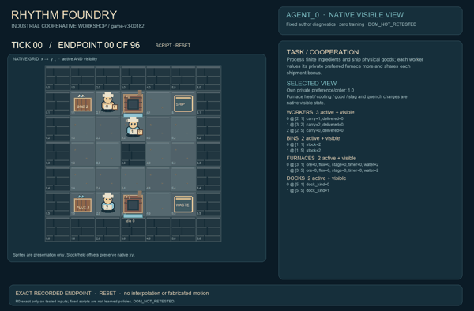
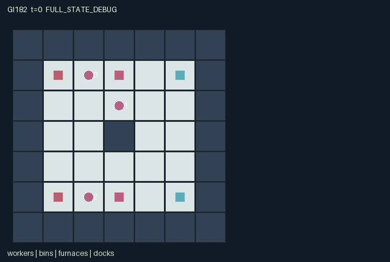

GI182 / SPATIAL
节律铸坊
携带有限矿料与助熔剂，轮流加料、点炉与冷却；把真正铸成的工件交付。
Original saved demonstration
Recorded native state, often authored scripts or interventions; information scope and failures are preserved in the original provenance. This is a saved demonstration, not live browser play.

Release verification episode
Untrained uniform legal actions. Actual JAX state sampled along the full original episode; full-state debug camera. No human performance or learning claim.

Run this game
crucibles play --game 182
Start Python locally, then open the address printed by the terminal. Installation, multiplayer, takeover and keyboard controls →
Objective, rewards & ending
Exact task contract
{
"objective": "Process finite ingredients and ship physical goods; each worker values its private preferred furnace more and shares each shipment bonus.",
"natural_termination": "All source bins empty, all workers empty-handed, and no ore or flux remains in either furnace. Exhausting material through waste is also natural completion; no reward threshold.",
"interaction": "Workers compete for finite ingredients, exchange lots, load complementary materials, control shared timed furnaces and spend their water. A missing flux or missed quench irreversibly converts material to slag.",
"observation_access": "All physical geometry, materials, stocks, stages and shipment/waste events are public. Each row alone includes that worker's preferred furnace. No private order value is a scene attribute or public event. All static object coordinates and dock/bin identities are public rules."
}Declared per-step reward bounds: 0 to 3. Observability: partially_observable.
Rules
- Carry one physical lot. Ore and flux are finite; the north and south furnaces hold one of each.
- Fire requires ore. A new charge waits two later transitions before reaching cooling or slag.
- A flux-complete hot lot has a two-transition quench window. Quenching spends furnace water; expiry makes slag.
- Take bins only underfoot and completed furnace lots within one cell. Pass to an adjacent empty waiting worker.
- Ship goods near the shipping dock; discard unwanted lots near waste. No stock is replenished.
- Worker actions and conflicting destinations use cyclic clock-based priority. Old occupied cells block movement.
- Every shipment gives a shared bonus and a private order-dependent value. Private orders are visible only in that role's observation.
- Scene state is a binding specification only. Actual recorded replay and animation have not been executed.
Original mechanism document (historical status wording retained)
# Rhythm Foundry — original source-only mechanism Status: AUTHORED_NOT_EXECUTED. This document describes source semantics and prospective hypotheses. No candidate import, reset, observe, mask, step, rollout, numerical library, rendering, training or seed search was performed. Static syntax/schema/whitelist checks, when recorded, are a different evidence class from R0 or game acceptance. Three workers inhabit the actual 7 × 7 map. Outer walls and the center wall block movement. Workers begin at (2,1), (3,2), (2,5); the first holds one ore atom and the second one flux atom. The ore bin at (1,1) and flux bin at (1,5) each hold two more atoms. Furnaces at (3,1) and (3,5), shipping at (5,1), and waste at (5,5) are physical interaction locations. Workers may occupy station tiles; only workers block other workers. One carried lot per worker is encoded as 0 empty, 1 ore, 2 flux, 3 north good, 4 south good, 5 ore-only slag, or 6 ore-and-flux slag. Each idle furnace has one ore slot and one flux slot. Deposit is possible within Manhattan distance one. Fire requires ore and locks the current composition; it is permitted without flux, with a persistent material consequence. A new fire sets stage 1 and timer 2 without ticking that new timer. Two subsequent transitions produce either a stage-2 cooling lot with timer 2, or ore-only slag if flux was missing. Quenching within distance one spends one of that furnace's two finite water charges and produces a good. An unquenched cooling lot expires after two subsequent transitions into two-atom slag. Quenching resolves before expiry on the final available transition. No operation repairs slag or adds flux after firing. Action 5 collects the lowest-index eligible source: a bin must be directly underfoot, while finished goods/slag require distance at most one from the furnace. Taking a furnace lot clears its ingredient slots and resets its stage/timer. Action 9 transfers the unchanged physical lot to an adjacent empty worker whose effective action is wait; lowest cyclic priority selects a recipient. Shipping converts good into an immutable delivery count. The waste dock accepts any carried nonempty lot and increments discarded ore/flux atoms. Delivery and waste never replenish stock. Movement uses the input state's occupied cells, forbids swaps and following into vacated cells within the same transition, and then resolves competing empty destinations by cyclic actor priority (actor minus clock modulo three). Illegal or out-of-range actions become wait. After movement, worker actions resolve in that same cyclic order with current stock/slot checks. An action admitted by the old mask can therefore lose a contested resource without spending it. Timer aging then uses the input stage and the still-current stage, which prevents a newly fired lot from aging or a quenched lot from expiring. Terminal handling finally applies. The material identities are retained through processing rather than created by an event counter. Let c_ore map carried codes to [0,1,0,1,1,1,1], and c_flux to [0,0,1,1,1,0,1]. The source implies: - 3 = ore-bin stock + sum(c_ore of all carries) + sum(furnace ore slots) + total shipped goods + discarded ore. - 3 = flux-bin stock + sum(c_flux of all carries) + sum(furnace flux slots) + total shipped goods + discarded flux. These are source-derived conservation claims awaiting numerical validation. No slag is silently deleted; water only decreases on an accepted quench. Workers remain at unique walkable positions; furnace slots remain binary, stages 0–4, timers 0–2, and carry codes 0–6 under source transitions. Every shipment gives its worker 2 if the good's furnace matches that worker's private binary order, otherwise 1. Every worker also receives 0.25 per shipment in that joint transition. Thus the declared per-step reward bound [0,3] contains the source-derived maximum 2.75. Private orders are sampled only from the supplied reset key and remain fixed. Other workers observe physical lots and public shipment counts, not a recipient's preference or realized private utility. Possible strategies depend on partners: divide ore and flux collection; establish a timed handoff from a busy quencher to a shipper; reserve scarce water for a preferred furnace; or start an ore-only charge that blocks a partner's desired complete lot. Rushing shipment versus retaining inputs for another furnace changes the next partner's feasible actions. These are plausible alternatives, not proven equilibria, optimal policies, learning results or measures of strategic richness. The literal paired hypothesis changes only worker 1's first flux deposit. After the common subsequent firing and two heating transitions, worker 0 is hypothesized to face a quench opportunity in one branch and slag in the other. The scripts and all seed choices are original literals, not search products. The identical downstream quench probe can be invalid in one branch and is explicitly normalized to wait. Its magnitude, actual legality and causal effect remain unmeasured. The flat observation is 76 public columns followed by own order and own index, O=78. All render entities bind actual positions/active/visibility and state attributes. All physical entities are public. No private order field is an entity attribute or event; renderers must show only the selected role's observation row. Stages and timers represent actual processing, and carry codes represent real conserved lots. No rendered movement is invented. Natural completion means all bins, carried lots and furnace contents are empty, including a run that discarded all material. Stranded flux or an unfinished lot may instead reach H=96. Natural completion takes priority on the horizon transition. A terminal raw call is absorbing, with unchanged clock/state/observation, zero reward, all dones true and preserved terminal cause; raw_step never resets. Small integer fields use int32; observations/rewards use float32 and flags bool. The external uint32 key is not duplicated in state. There is no adapter, training replacement or upstream copied code in this package. The five official supplied references were byte/hash checked only, not semantically consulted. This batch's controlled design/contracts are the semantic inputs. Originality here means authorship of this implementation, not proven novelty or non-isomorphism. Runtime shape agreement, eager/JIT/vmap parity, solvability, causal interventions, replay, animation, learning and transfer all remain unproven. ## Literal source evidence - candidate.py:23: `"carry": jnp.array([1,2,0], jnp.int32),` - candidate.py:123: `loading = (a[i] == 6) & jnp.any(deposit[i])` - candidate.py:132: `cooling = (a[i] == 8) & jnp.any(quench[i])` - candidate.py:151: `heating = (state["stage"] == 1) & (s["stage"] == 1)` - candidate.py:154: `hot_end = heating & (s["timer"] == 0)` - candidate.py:158: `s["stage"] = jnp.where(cool_end,4,s["stage"])` - candidate.py:162: `s["natural"] = (jnp.sum(s["stock"]) == 0) & jnp.all(s["carry"] == 0) & (` - candidate.py:165: `s = jax.tree.map(lambda new, old: jnp.where(state["done"],old,new),s,state)` Interface anchors from static AST: reset at candidate.py:12–44; legal_actions at candidate.py:72–77; observe at candidate.py:79–85; raw_step at candidate.py:87–171. The literal anchors and declared shapes were inspected statically. They are not execution traces or a proof that the implementation satisfies these claims under JAX.
Commands
Roles & abilities
agent_0 Worker with private north/south order
agent_1 Worker with private north/south order
agent_2 Worker with private north/south order
Observation permissions
Training receives only the original observation rows. Role cameras use declared visibility; debug cameras are explicitly marked. Local benchmark records log debug exposure and role takeover history.
Exact observation layout
[
{
"slice": [
0,
49
],
"meaning": "Public 7 by 7 floor map, row-major yx",
"visibility": "public"
},
{
"slice": [
49,
55
],
"meaning": "All worker xy coordinates in actor order",
"visibility": "public"
},
{
"slice": [
55,
58
],
"meaning": "Public carried-lot codes",
"visibility": "public"
},
{
"slice": [
58,
60
],
"meaning": "Furnace ore atoms",
"visibility": "public"
},
{
"slice": [
60,
62
],
"meaning": "Furnace flux atoms",
"visibility": "public"
},
{
"slice": [
62,
64
],
"meaning": "Furnace stages",
"visibility": "public"
},
{
"slice": [
64,
66
],
"meaning": "Furnace timers",
"visibility": "public"
},
{
"slice": [
66,
68
],
"meaning": "Furnace water",
"visibility": "public"
},
{
"slice": [
68,
70
],
"meaning": "Ore/flux bin stocks",
"visibility": "public"
},
{
"slice": [
70,
73
],
"meaning": "Worker shipment counters",
"visibility": "public"
},
{
"slice": [
73,
75
],
"meaning": "Discarded ore/flux atoms",
"visibility": "public"
},
{
"slice": [
75,
76
],
"meaning": "Raw transition clock",
"visibility": "public"
},
{
"slice": [
76,
77
],
"meaning": "Own preferred furnace: 0 north, 1 south",
"visibility": "self"
},
{
"slice": [
77,
78
],
"meaning": "Own actor index",
"visibility": "self"
}
]Entity visibility & attributes
[
{
"id": "workers",
"kind": "agent",
"count": 3,
"position": [
"pos"
],
"active": [
"active"
],
"visibility": [
"visible"
],
"attributes": [
{
"state_path": [
"carry"
],
"meaning": "Lot: 0 empty, 1 ore, 2 flux, 3 north good, 4 south good, 5 ore slag, 6 ore-plus-flux slag",
"display": "category"
},
{
"state_path": [
"delivered"
],
"meaning": "Public cumulative units shipped by worker",
"display": "number"
}
]
},
{
"id": "bins",
"kind": "resource",
"count": 2,
"position": [
"bin_pos"
],
"active": [
"bin_active"
],
"visibility": [
"bin_visible"
],
"attributes": [
{
"state_path": [
"stock"
],
"meaning": "Remaining units; bin 0 ore, bin 1 flux",
"display": "number"
}
]
},
{
"id": "furnaces",
"kind": "object",
"count": 2,
"position": [
"furnace_pos"
],
"active": [
"furnace_active"
],
"visibility": [
"furnace_visible"
],
"attributes": [
{
"state_path": [
"ore"
],
"meaning": "Ore atom retained in the current lot",
"display": "flag"
},
{
"state_path": [
"flux"
],
"meaning": "Flux atom retained in the current lot",
"display": "flag"
},
{
"state_path": [
"stage"
],
"meaning": "0 idle, 1 heating, 2 cooling window, 3 good, 4 slag",
"display": "category"
},
{
"state_path": [
"timer"
],
"meaning": "Remaining heating/cooling transitions",
"display": "number"
},
{
"state_path": [
"water"
],
"meaning": "Finite quench charges",
"display": "bar"
}
]
},
{
"id": "docks",
"kind": "landmark",
"count": 2,
"position": [
"dock_pos"
],
"active": [
"dock_active"
],
"visibility": [
"dock_visible"
],
"attributes": [
{
"state_path": [
"dock_kind"
],
"meaning": "0 shipping, 1 waste",
"display": "category"
}
]
}
]Actual verification & provenance
Per-game execution receipt
{
"game": "gi182",
"status": "PASS",
"verification_revision": 2,
"source_sha256": "8c9beba61f017e424ca0bbb3ddf9226c0fc799abb104a754d725dbbae29b913e",
"seed": 20261101,
"runtime": {
"jax": "0.4.38",
"numpy": "1.26.4",
"devices": [
"TFRT_CPU_0"
]
},
"dimensions": {
"num_agents": 3,
"observation_size": 78,
"num_actions": 11,
"max_steps": 96
},
"checks": {
"eager_reset": {
"status": "PASS",
"seconds": 0.7157566547393799
},
"observation_spaces_legal_masks": {
"status": "PASS",
"seconds": 2.1023917198181152
},
"eager_step": {
"status": "PASS",
"seconds": 2.9636547565460205
},
"jit_reset": {
"status": "PASS",
"seconds": 0.21260929107666016
},
"jit_step": {
"status": "PASS",
"seconds": 2.936338424682617
},
"eager_jit_integer_parity_float_measurement": {
"status": "PASS",
"seconds": 0.0
},
"jit_vmap_reset": {
"status": "PASS",
"seconds": 0.26425933837890625
},
"jit_vmap_step": {
"status": "PASS",
"seconds": 3.5161519050598145
},
"outer_autoreset_api": {
"status": "PASS",
"seconds": 3.4404098987579346
},
"full_original_horizon_episode_and_render": {
"status": "PASS",
"seconds": 1.9557230472564697
}
},
"human_scores": null,
"browser_controls": "PENDING",
"failures": [],
"elapsed_seconds": 19.117111921310425,
"float_parity_max_abs": 0.0,
"numerical_parity": "EXACT",
"raw_terminal_absorbing": "PASS",
"terminal_outer_reset": "PASS",
"episode_steps": 96,
"scripted_random_returns": [
0.0,
0.0,
0.0
],
"terminal": true,
"demo_information": "FULL_STATE_DEBUG",
"demo_frames": 25,
"render_roles_checked": 3
}Chromium control verification
{
"game": "gi182",
"status": "PASS",
"human_scores": null,
"engineering": true,
"checks": [
"catalog_selected_and_real_native_reset",
"keyboard_native_direction_command",
"dom_queue_and_native_step",
"second_participant_ownership_and_native_joint_step",
"all_roles_individually_controllable_no_role_cap",
"explicit_debug_camera",
"release_to_pure_ai_without_reset",
"close_session_preserves_log"
],
"ui_sha256": "96243f9de144b80b5e20a114330e2206bdcd58d3efc9c6f13bbc08b95cacc14d",
"keyboard_action_id": 2,
"seconds": 6.987297058105469
}Original identity and file hashes
{
"id": 182,
"key": "gi182",
"title": "节律铸坊",
"summary": "携带有限矿料与助熔剂，轮流加料、点炉与冷却；把真正铸成的工件交付。",
"tags": [
"锻造协作",
"有限材料"
],
"family": "spatial",
"dimensions": {
"num_agents": 3,
"observation_size": 78,
"num_actions": 11,
"max_steps": 96
},
"source_sha256": "8c9beba61f017e424ca0bbb3ddf9226c0fc799abb104a754d725dbbae29b913e",
"manifest_sha256": "3702b548838c74045fae73cafeb14ca6e583936190e04c85af5895a82018031e",
"files": [
{
"file": "candidate.py",
"sha256": "8c9beba61f017e424ca0bbb3ddf9226c0fc799abb104a754d725dbbae29b913e",
"bytes": 9645,
"origin": "work/exp_2/game_incubator_v3/community_games222_225_visualization_root222_v1/native154_candidate/registry/v2/games/game-v3-00182/candidate.py"
},
{
"file": "manifest.json",
"sha256": "3702b548838c74045fae73cafeb14ca6e583936190e04c85af5895a82018031e",
"bytes": 12859,
"origin": "work/exp_2/game_incubator_v3/community_games222_225_visualization_root222_v1/native154_candidate/registry/v2/games/game-v3-00182/manifest.json"
},
{
"file": "scene.json",
"sha256": "d547bdd3c80c4aef05a8e4b825686f67fb7c283fcfffdedbab8b0d1cfed83fbd",
"bytes": 6804,
"origin": "work/exp_2/game_incubator_v3/community_games222_225_visualization_root222_v1/native154_candidate/registry/v2/games/game-v3-00182/scene.json"
},
{
"file": "mechanism.md",
"sha256": "7d676cf685ef580132e815b34e90274e5b9b7112a86f0d5102153df567801ced",
"bytes": 7496,
"origin": "work/exp_2/game_incubator_v3/sources/game-v3-00182/attempt_00/mechanism.md"
},
{
"file": "playthrough.json",
"sha256": "65f8a20918d4113f51fbff97770c3817eebea1be90ea8d491ca6d59ce20c2a30",
"bytes": 4084,
"origin": "work/exp_2/game_incubator_v3/sources/game-v3-00182/attempt_00/playthrough.json"
}
],
"original_status": "NATIVE154_REFERENCE",
"original_saved_replay": true,
"release_validation": "PASS",
"human_scores": null,
"browser_validation": "PASS"
}